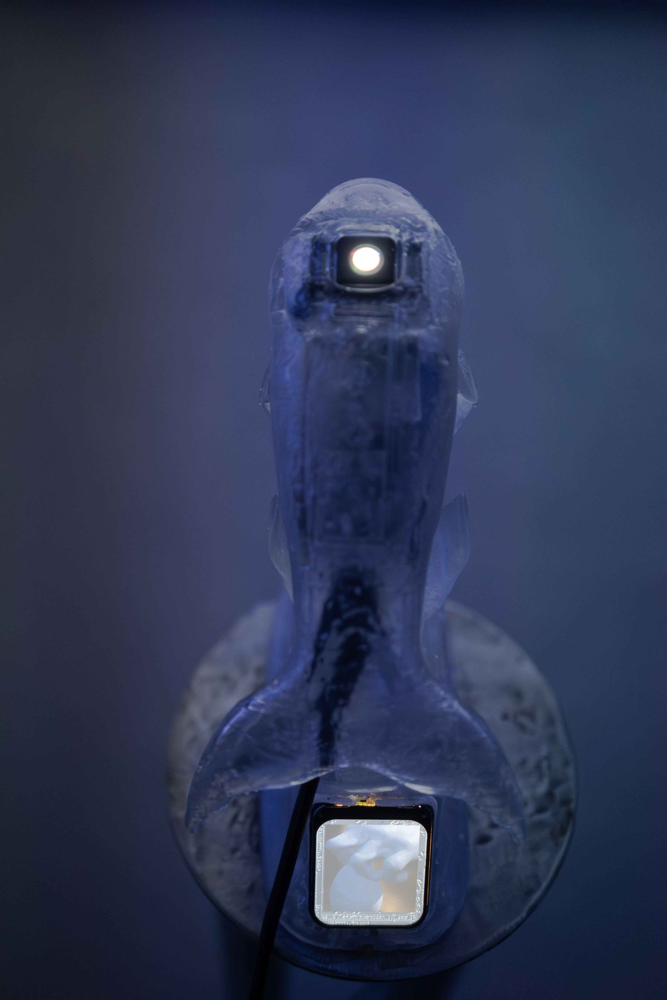
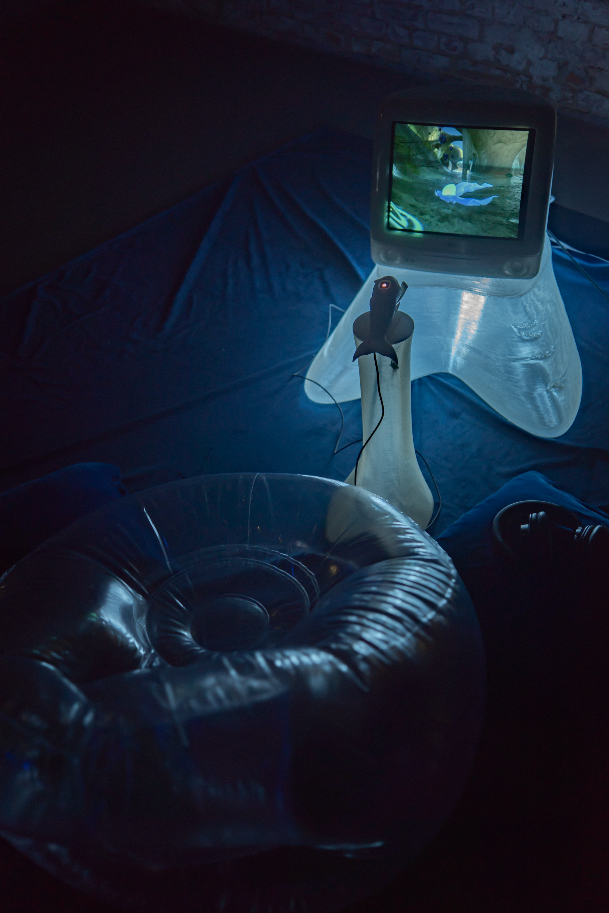
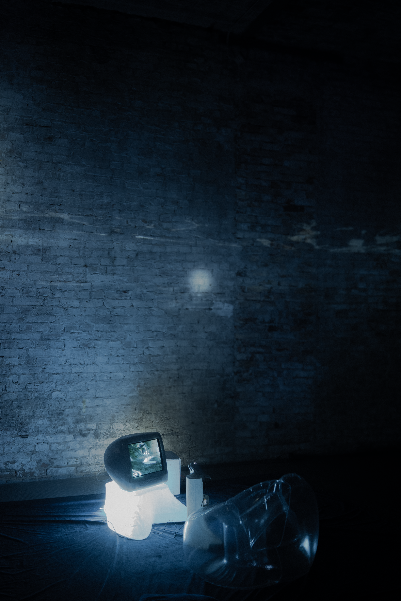
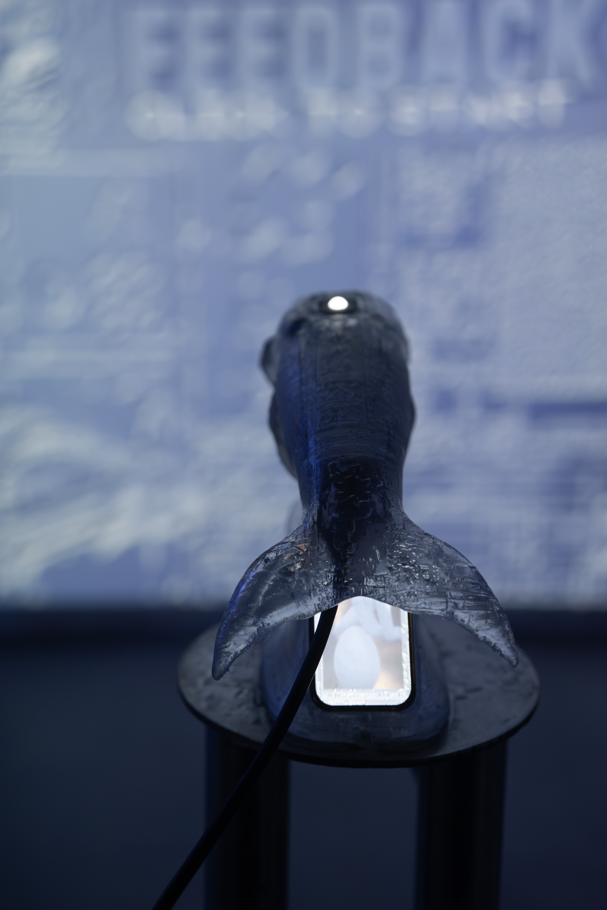
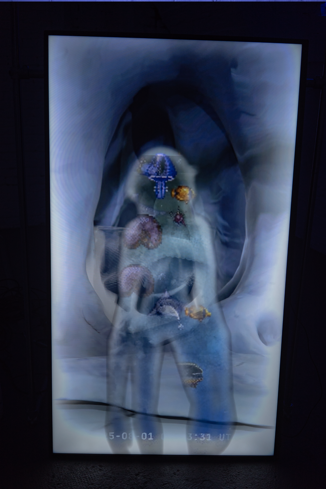

Nostalgia is the Extended Feedback
Where is the sea in this cybernetic world?

Nostalgia Is the Extended Feedback unfolds as a slow, atmospheric videogame, suspended between dream and digital residue. The world they move through feels half-remembered: waterlogged ruins, luminous stones and interfaces from another era.
As you enter, a character awakens in a flooded landscape that teeters between digital ruin and emotional archive. Across this submerged terrain lie luminous eggs ; latent objects holding fragments of song, ghostly residues of time, and emotional echoes waiting to be assembled. These fragments aren’t just collectibles; they are a form of reconciliation with memory itself.
The gamified piece stands against the flattening logic of dominant web, against the relentless homogenization of visual culture, offering instead a counter-narrative; one where aesthetics refuse to be efficient and linear, and instead fold and unfold like tides. (Refresh magazine article)
Water here is both medium and metaphor. It moves with a poetry of time-lag and recollection: deeper currents that rupture linear progression, and dreamlike reflections that feel handwritten rather than algorithmically produced. The installation borrows from early online aesthetics interfaces that feel out of time, low-poly textures alongside ambient soundscapes , to craft an environment that is equally familiar and intangible.
This is a space where nostalgia doesn’t signal longing for the past, but a search for an origin ; a memory before memory, an emotional terrain between analog intuition and digital sediment. Each world the player traverses , underwater ruins, rocky monuments, luminous nests, ifeels less like a “level” and more like an ocean of ghosts shaped by collective longing and the collapsed promise of the internet.
The work invites visitors to drift inside the game, to stay with its shifting rhythms and let perception bend with the environment. It holds space for feeling as much as interaction, revealing digital worlds as poetic, slow, and emotionally complex.
In the closing chapter of SOMA Art Berlin’s Becoming Future series, Joaquina Salgado conjures an immersive world that feels like a memory you almost remember. Nostalgia Is the Extended Feedback is not a narrative game with a tidy plot ; it’s a slow-game installation where liquid worlds and dreamcore atmospheres become terrain for exploration, drift, and subjective return.
Curated by Nabi Nara.
Collaborators:
Programming: Ali Salama (iMac), Gungor Kocak (LCD Screens & Trackball).
Stainless Steel Work: Lena Becerra.
Sound: Tatiana Heuman (QOA).
Voices: Tatiana Heuman, Bianca Panozzo, Florencia Ondona.
Graphic Design: Carolina Ovando, Maja Usak.
Installation GamePlay

Custom interface designed for theVideogame
Install Shot at SOMA Berlin


.
